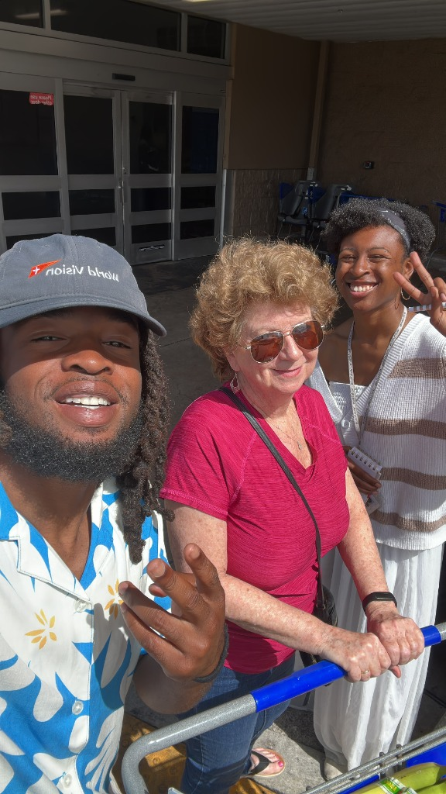
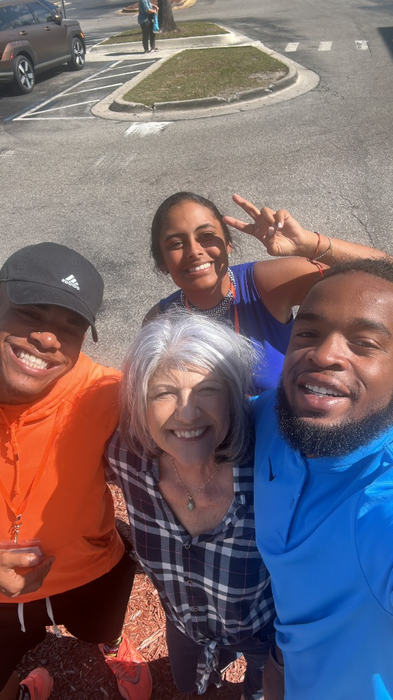
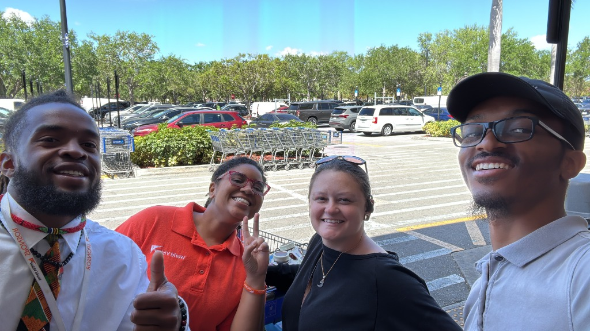
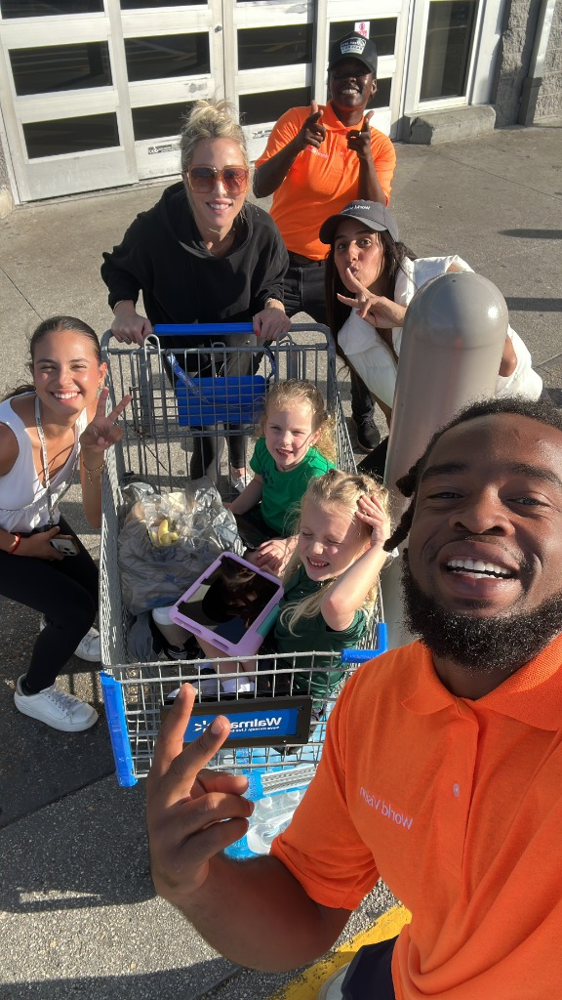
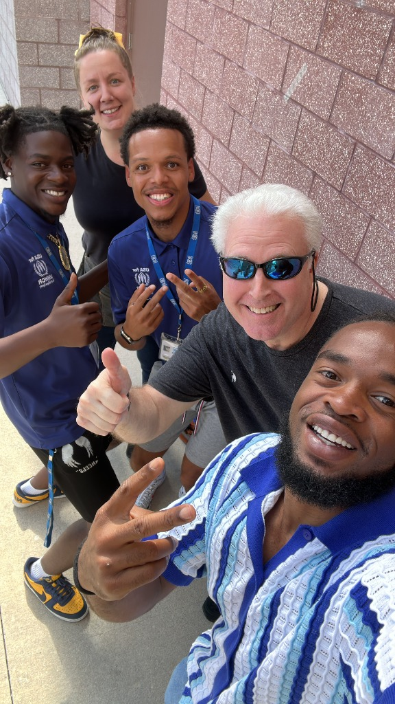
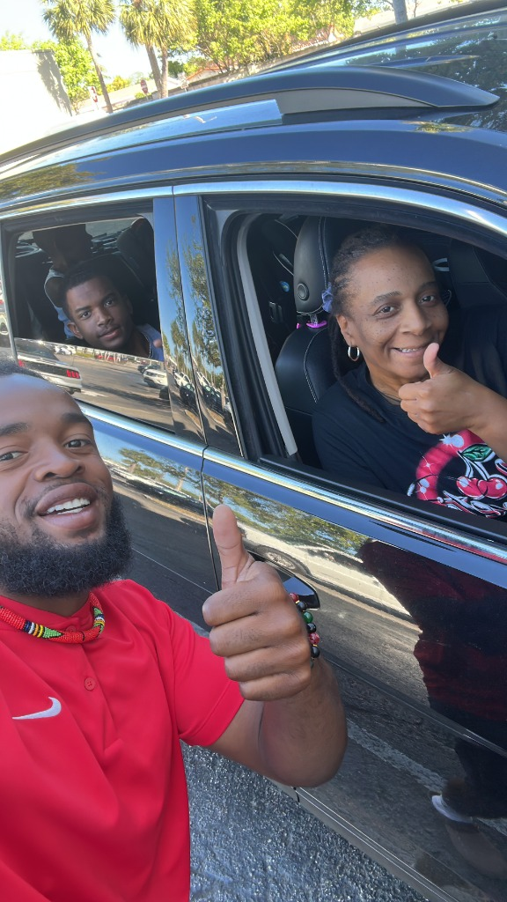
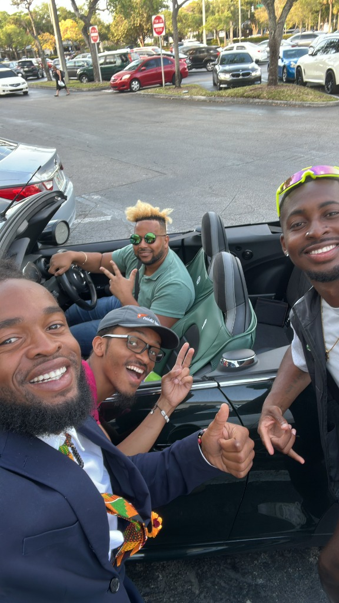
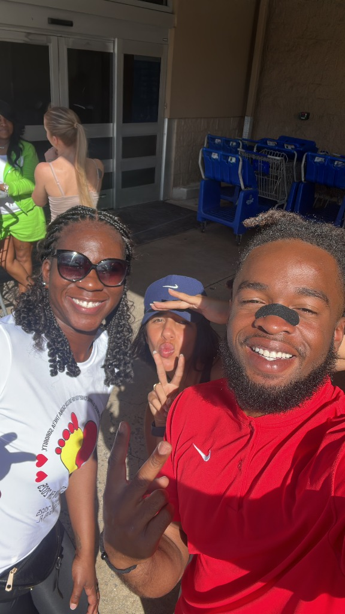
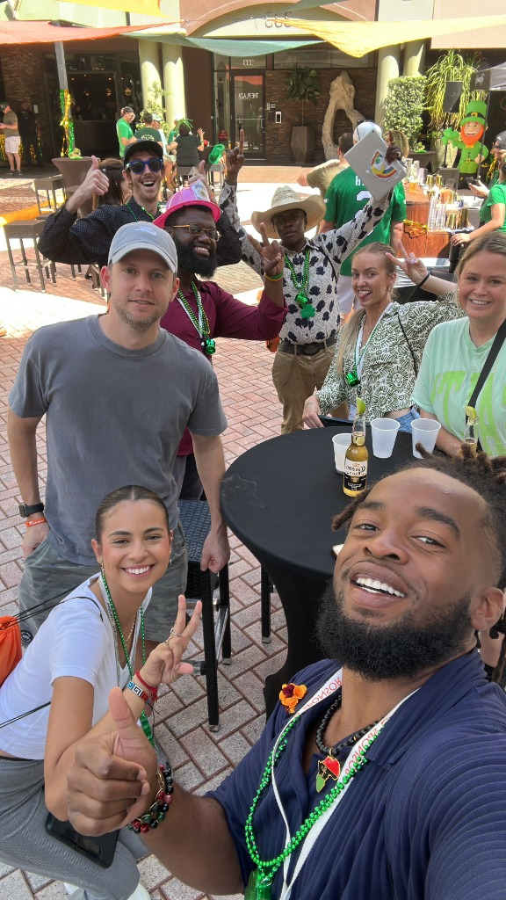
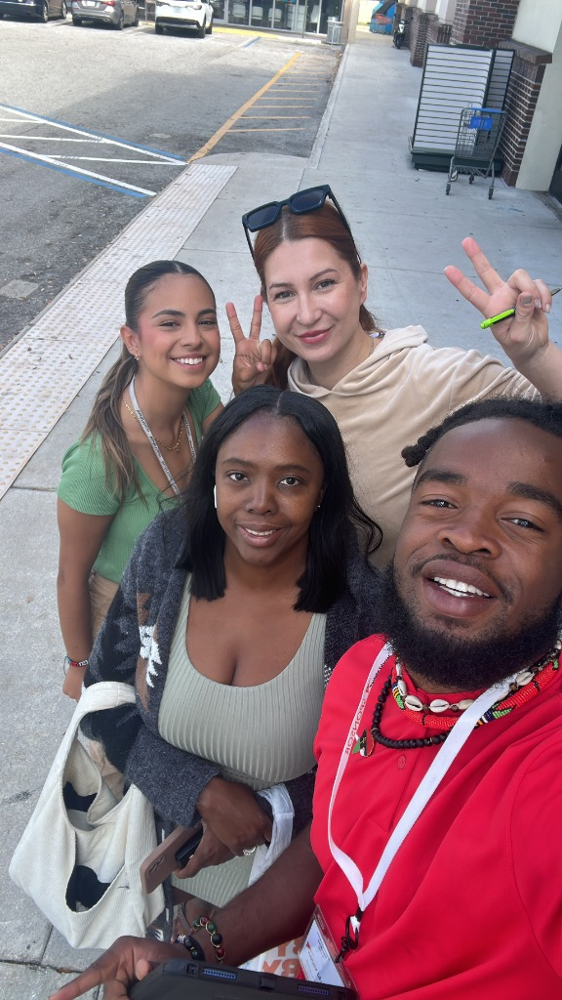

After the Army, I traded the theater of war for the theater of community. Two years of nonprofit work taught me that the most complex system any engineer will ever face is a human being in crisis.
When I left the Army, I had a choice: pursue the highest-paying role my security clearance and engineering background could land me, or go further into service. I chose service — not out of naïveté, but because I understood something that took many of my peers years to learn: the hardest problems in technology are not technical.
For two years, I served in a nonprofit organization working directly with communities underserved by mental health resources, economic opportunity, and educational infrastructure. This work was not peripheral to my academic development — it is my academic development.
Designed and coordinated outreach programs connecting community members to mental health services, legal aid, and educational resources. Managed volunteer cohorts and donor communications.
Led a technology access initiative helping underserved community members gain digital literacy skills. This work directly informed my research interest in AI equity and algorithmic bias.
In the nonprofit sector, I witnessed firsthand how algorithmic systems — deployed without community input, designed without cultural context — can simultaneously claim to help and systematically harm. Benefits eligibility algorithms that exclude documented cases. Predictive policing tools that treat zip codes as risk factors. Credit scoring models that penalize the unbanked.
This is not an abstract research interest for me. It is lived experience. And it is the foundation of my argument that AI practitioners must have genuine relationships with the communities their systems will affect — before, during, and after deployment.









